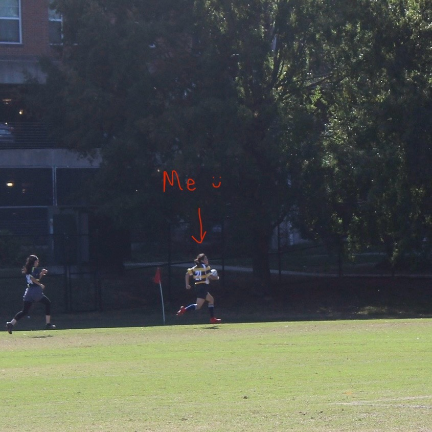

Welcome to a portion of my brain. My name is Lindsey Flores! There are many things enjoy to do, but here are some main points about me.
- What am I up to?
- Beep Boop
- More About me
What am I up to?
Currently, I am finishing up my Computer Science Degree at the University of North Carolina at Greensboro, where I have obtained a great portion of my programming knowledge. During my enrollment, I have been working at 6-TECH, the technology department the university. Here I have gained experience in systems analysis, hardware management and worked with the cloud-computing service SERVICENOW platform.
Beep Boop?
I love computers. On my free time I try to spend as much of it as possible learning technology, creating things with it or just writing code. As a full-stack developer, I enjoy doing a little bit of everything. However, I will say I have found a profound enjoyment in web-developement. I am aware that HTML/CSS are really considered as programming languages, but design is an important component So i have them listed in my top 4 programming languages.
Top 4 Programming Languages:
- Javascript
- Java
- Python
- HTML/CSS
Projects:
- breakItDown: This is my current project, where I hope to make it easier for people to read terms and conditions using AI.
- Allerfence: a platform enabling individuals with dietary restrictions to safely order from restaurants, addressing allergen concerns.
- theBasics: an online clothing store project, enhancing user experience with a responsive design while integrating third-party APIs for expanded functionality.
This isn't a software project, but I am interested in Raspberry Pi's so I am working on a side DIY smart mirror.
Fun Facts about me:
I can play guitar, but it can get hard to find time for everything sometimes so practicing a musical instrument has been top on a priority list :) But thats okay, I love listening to music and always have something playing in the background. According to spotify these are my top genres:
- Latin
- Rock
- Metal
I used to be on my university's rugby team!
